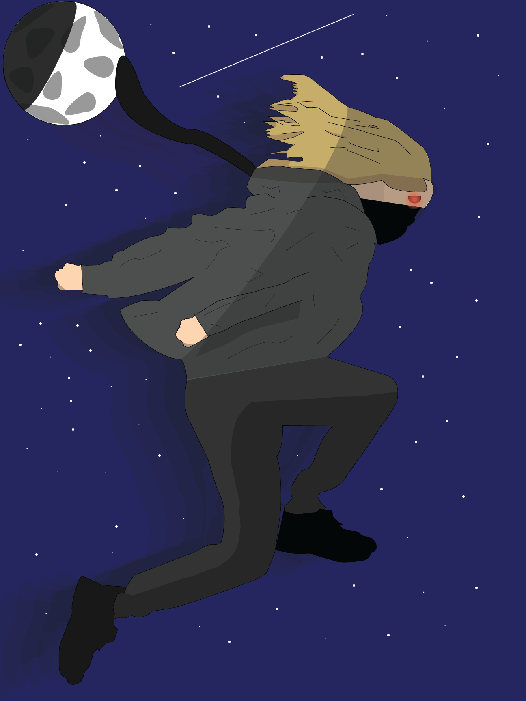

This is one of the self portraits I made in Graphic Design 2. This was one of my favorites because of how much it shows that I have grown doing digital art. I took a lot of time to try and make it really good. I'm very happy with how it came out.
